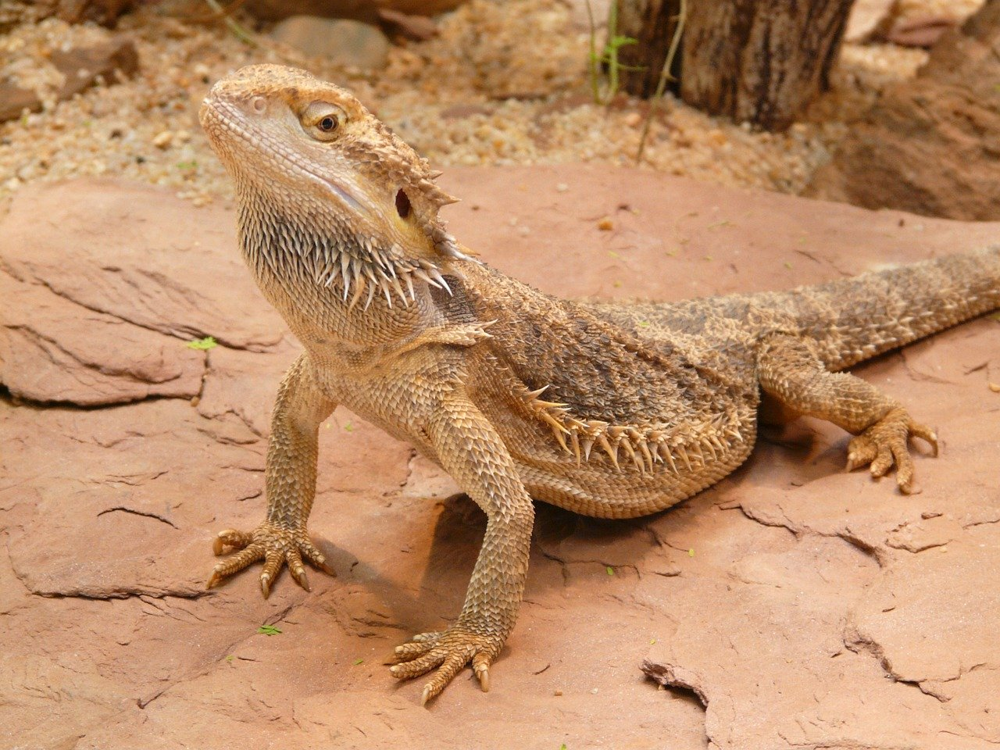
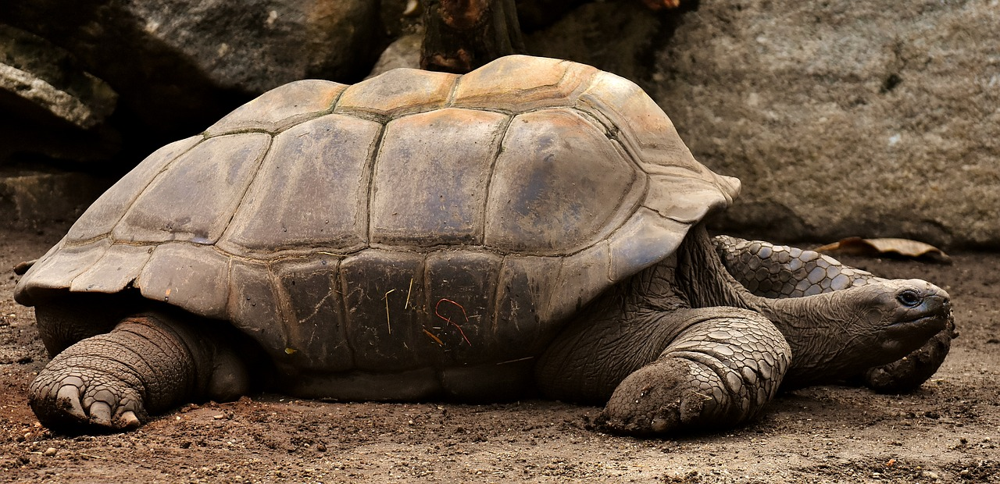
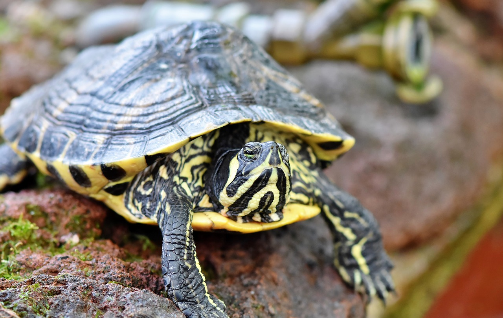
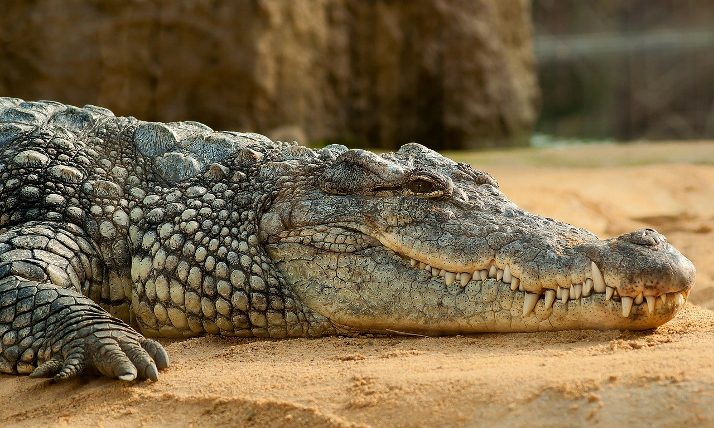
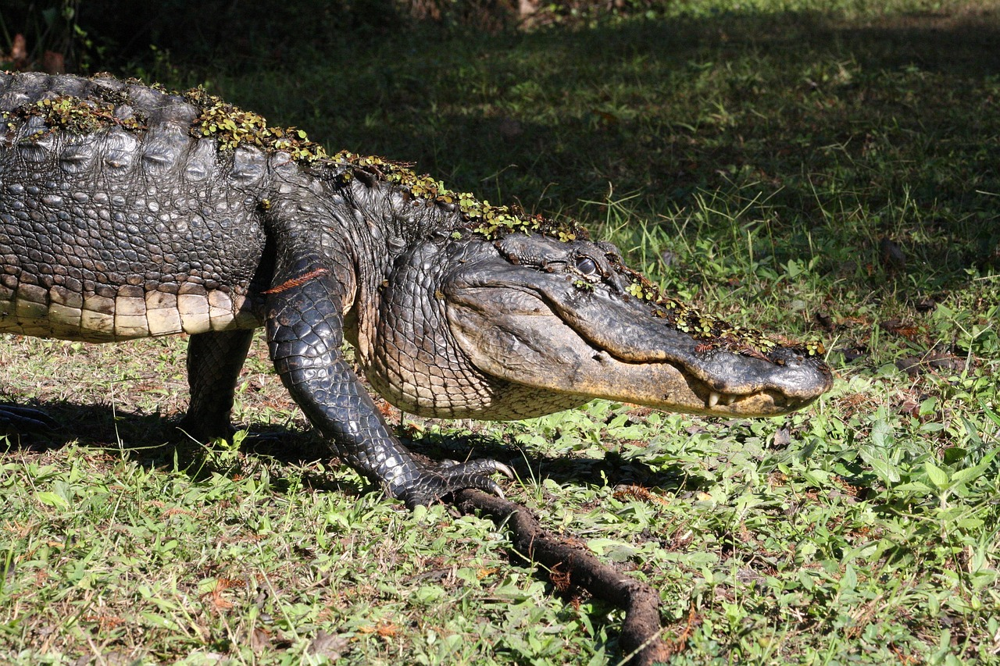
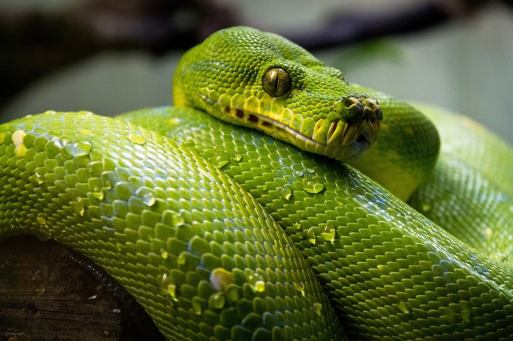
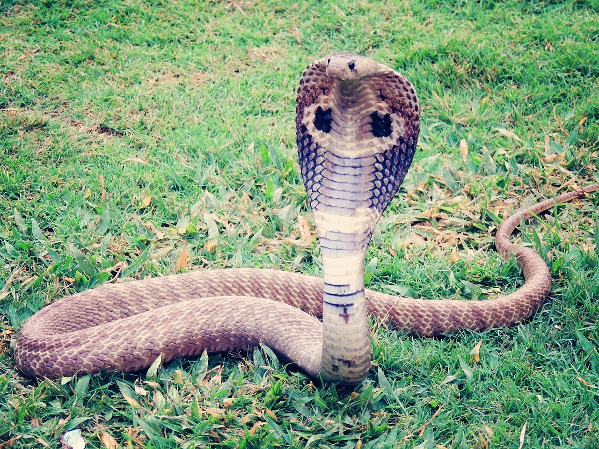

Welcome to the Reptile House
Reptiles are tetrapod animals in the class Reptilia, comprising today's turtles, crocodilians, snakes, amphisbaenians, lizards, tuatara, and their extinct relatives. The study of these traditional reptile orders, historically combined with that of modern amphibians, is called herpetology.
Because some reptiles are more closely related to birds than they are to other reptiles (e.g., crocodiles are more closely related to birds than they are to lizards), the traditional groups of "reptiles" listed above do not together constitute a monophyletic grouping or clade (consisting of all descendants of a common ancestor). For this reason, many modern scientists prefer to consider the birds part of Reptilia as well, thereby making Reptilia a monophyletic class, including all living Diapsids.[1][2][3][4] The term "reptiles" is sometimes used as shorthand for 'non-avian Reptilia'.[5][6]
Bearded Dragon

Bearded dragons are agamid lizards in the genus Pogona.
The central bearded dragon is the common name for Pogona vitticeps, which lives in dry areas of Australia The name "bearded dragon" refers to the fringes around and under the head. The underside of the throat turns black if they are stressed or see a potential rival.
Central bearded dragons can grow to about 2 feet long. Half of the length of a bearded dragon's body is its tail. Females are usually smaller than males. If a bearded dragon is scared, it will flatten its body against the ground, puff out its spiky throat, and open its jaws to make itself look larger. Bearded dragons sometimes open their mouths wide to allow hot air to warm them better when they are lying in the sun. They also open their mouths to help them cool down; the warm air and heat escapes through their mouths. This behavior is similar to panting.
For More Information, please visit: https://simple.wikipedia.org/wiki/Bearded_dragon
Tortoise vs Turtle
The major difference between the two is that tortoises dwell on land, while turtles live in the water some or nearly all of the time. The bodies of tortoises and turtles are both shielded by a shell, the upper part of which is called carapace, with the lower portion called a plastron.
Giant Tortoise

Tortoises (/ˈtɔːr.təs.ɪz/) are reptile species of the family Testudinidae of the order Testudines (the turtles). They are particularly distinguished from other turtles by being land-dwelling, while many (though not all) other turtle species are at least partly aquatic. Like other turtles, tortoises have a shell to protect from predation and other threats. The shell in tortoises is generally hard, and like other members of the suborder Cryptodira, they retract their necks and heads directly backwards into the shell to protect them.
Tortoises are unique among vertebrates in that the pectoral and pelvic girdles are inside the ribcage rather than outside. Tortoises can vary in dimension from a few centimeters to two meters. They are usually diurnal animals with tendencies to be crepuscular depending on the ambient temperatures. They are generally reclusive animals. Tortoises are the longest-living land animal in the world, although the longest-living species of tortoise is a matter of debate. Galápagos tortoises are noted to live over 150 years, but an Aldabra giant tortoise named Adwaita may have lived an estimated 255 years. In general, most tortoise species can live 80–150 years.
For More Information, please visit: https://en.wikipedia.org/wiki/Tortoise
Water Turtle

Turtles are reptiles of the order Testudines characterized by a special bony or cartilaginous shell developed from their ribs and acting as a shield.[3] "Turtle" may refer to the order as a whole (American English) or to fresh-water and sea-dwelling testudines (British English).[4] The order Testudines includes both extant (living) and extinct species. The earliest known members of this group date from the Middle Jurassic,[1] making turtles one of the oldest reptile groups and a more ancient group than snakes or crocodilians. Of the 356 known species[2] alive today, some are highly endangered.[2]
For More Information, please visit: https://en.wikipedia.org/wiki/Turtle
Alligator vs Crocodile
The major difference between the two is their snout shape. Alligators have wider, U-shaped snouts, while crocodile front ends are more pointed and V-shaped. ... For alligators, the upper jaw is wider than the lower one, so when they close their mouths, all their teeth are hidden
Crocodile

Crocodiles (subfamily Crocodylinae) or true crocodiles are large semiaquatic reptiles that live throughout the tropics in Africa, Asia, the Americas and Australia. Crocodylinae, all of whose members are considered true crocodiles, is classified as a biological subfamily. A broader sense of the term crocodile, Crocodylidae that includes Tomistoma, is not used in this article. The term crocodile here applies to only the species within the subfamily of Crocodylinae. The term is sometimes used even more loosely to include all extant members of the order Crocodilia, which includes the alligators and caimans (family Alligatoridae), the gharial and false gharial (family Gavialidae), and all other living and fossil Crocodylomorpha.
For More Information, please visit: https://en.wikipedia.org/wiki/Crocodile
Alligator

An alligator is a crocodilian in the genus Alligator of the family Alligatoridae. The two living species are the American alligator (A. mississippiensis) and the Chinese alligator (A. sinensis). Additionally, several extinct species of alligator are known from fossil remains. Alligators first appeared during the Oligocene epoch about 37 million years ago.[1]
The name "alligator" is probably an anglicized form of el lagarto, the Spanish term for "the lizard", which early Spanish explorers and settlers in Florida called the alligator.[2] Later English spellings of the name included allagarta and alagarto.[3]
For More Information, please visit: https://en.wikipedia.org/wiki/Alligator
Green Tree Python
 The green tree python (Morelia viridis), is a species of python native to New Guinea, islands in Indonesia, and Cape York Peninsula in Australia. Described by Hermann Schlegel in 1872, it was known for many years as Chondropython viridis. As its name suggests, it is a bright green snake that can reach 2 m in length and 1.6 kg in weight, with females slightly larger and heavier than males. Living generally in trees, the green tree python mainly hunts and eats small reptiles and mammals. It is a popular pet, and numbers in the wild have suffered with large-scale smuggling of wild-caught green tree pythons in Indonesia. Despite this, the green tree python is rated as least concern on the IUCN Red List of endangered species.
For More Information, please visit: https://en.wikipedia.org/wiki/Green_tree_python
King Cobra
 The king cobra (Ophiophagus hannah), also known as the hamadryad, is a venomous snake species in the family Elapidae, endemic to forests from India through Southeast Asia. It is threatened by habitat destruction and has been listed as Vulnerable on the IUCN Red List since 2010.[1] It is the world's longest venomous snake.[2] Adult king cobras are 3.18 to 4 m (10.4 to 13.1 ft) long. The longest known individual measured 5.85 m (19.2 ft).[3] It is the sole member of the genus Ophiophagus. It preys chiefly on other snakes and occasionally on some other vertebrates, such as lizards and rodents. It is a highly venomous and dangerous snake when agitated or provoked that has a fearsome reputation in its range,[4][5] although it is typically shy and avoids confrontation with humans when possible. The king cobra is a prominent symbol in the mythology and folk traditions of India, Sri Lanka and Myanmar.[6][7] It is the national reptile of India.[8]
For More Information, please visit: https://en.wikipedia.org/wiki/King_cobra
 My Virtual Zoo
My Virtual Zoo